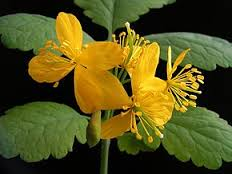

Chélidoine ou herbe aux verrues

Chélidoine ou herbe aux verrues (Chelidonium majus de la famille des Papaveraceae)
Très Toxique pour le Korat.
Partie toxique pour les chats en général et le Korat en particulier :
Toute la plante y compris les racines et surtout les fruits.
Symptômes du processus pathologique :
Salivation et soif intense, démarche hésitante, somnolence, puis convulsions et mort.
Origine de la toxicité (principe actif) :
Chélidonine, isoquinoline. sanguinarine, protropine.